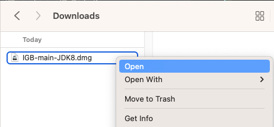

Integrated Genome Browser - Early Access
Click here for the released and tested version of IGB.
Early Access? What's that?
Early Access releases are the latest development version of IGB, which includes the latest improvements, including many requests from users. However, this early access version has not been thoroughly tested.
To get the latest stable version of IGB, visit the IGB download page.
Install Early Access IGB on Mac
The Early Access installer for Mac is not notarized. To install this unnotarized version, do the following steps.
- Right-click and select Open on the .dmg file.
- Right-click on the IGB icon and select Open.
- Click OK if a popup appears saying IGB can't be opened.
- Right-click on the IGB icon again and select Open.
- Click the Open button. The IGB installer should start.
- Follow the installer instructions from here.
